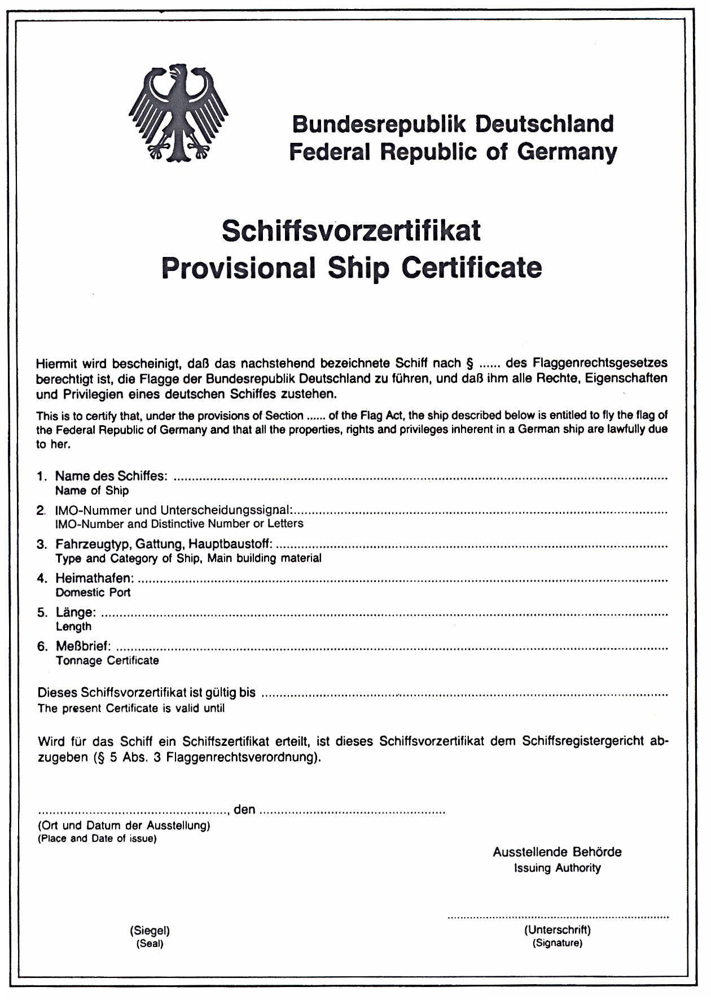

Vollzitat:
"Flaggenrechtsverordnung vom 4. Juli 1990 (BGBl. I S. 1389), die zuletzt durch Artikel 178 des Gesetzes vom 29. März 2017 (BGBl. I S. 626) geändert worden ist"
| Stand: | Zuletzt geändert durch Art. 178 G v. 29.3.2017 I 626 |
(+++ Textnachweis ab: 15.7.1990 +++)
(Bundesadler) Bundesrepublik Deutschland
Federal Republic of Germany
Schiffsvorzertifikat
Provisional Ship Certificate
Hiermit wird bescheinigt, daß das nachstehend bezeichnete
Schiff nach § ... des Flaggenrechtsgesetzes berechtigt ist,
die Flagge der Bundesrepublik Deutschland zu führen, und
daß ihm alle Rechte, Eigenschaften und Privilegien eines
deutschen Schiffes zustehen.This is to certify that, under the provisions of Section ...
of the Flag Act, the ship described below ist entitled to fly
the flag of the Federal Republic of Germany and that all the
properties, rights and privileges inherent in a German ship
are lawfully due to her.
1. Name des Schiffes: ........................................
Name of Ship
2. IMO-Nummer und Unterscheidungssignal: .....................
IMO-Number and Distinctive Number or Letters
3. Fahrzeugtyp, Gattung, Hauptbaustoff: .......................
Type and Category of Ship, Main building material
4. Heimathafen: ..............................................
Domestic Port
5. Länge: ....................................................
Length
6. Meßbrief: .................................................
Tonnage Certificate
Dieses Schiffsvorzertifikat ist gültig bis ...................The present Certificate ist valid until
Wird für das Schiff ein Schiffszertifikat erteilt, ist dieses
Schiffsvorzertifikat dem Schiffsregistergericht abzugeben
(§ 5 Abs. 3 Flaggenrechtsverordnung).
................................, den ...................
(Ort und Datum der Ausstellung)(Place and Date of issue)
Ausstellende Behörde
Issuing Authority
.............................
(Siegel) (Unterschrift)
(Seal)
(Signature)
